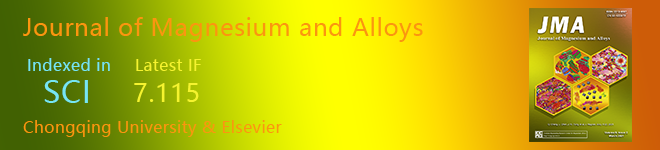

|

Guide for Authors
| Submit Your Articles
| Create E-alerts
Magnesium matrix composite reinforced by nanoparticles – A review
|
Dear Professor,
We are sending this as you may have an interest in magnesium matrix nanocomposite. Recently, a major review paper on magnesium matrix nanocomposite authored by Prof. Xiaojun Wang and his colleagues has just been published in Journal of Magnesium and Alloys. This paper provides a comprehensive perspective of magnesium composite. We would like to recommend this paper to you.
Magnesium matrix composite reinforced by nanoparticles – A review. Journal of Magnesium and Alloys. Volume 9, Issue 1, 15 January 2021, Pages 57-77. doi:10.1016/j.jma.2020.08.018.
Authored by:
K.B. Nie, X.J. Wang, K.K. Deng, X.S. Hu, K. Wu.
|
|
Abstract
Significant progress has been made in magnesium-based composites during recent decades, especially for the appearance of magnesium matrix composite reinforced by nanoparticles. The nanoparticles added not only exhibit a good strengthening effect, but also maintain the initial toughness of the matrix, effectively balancing the contradiction between the strength and plasticity in the traditional magnesium matrix composites. The magnesium matrix nanocomposites with excellent mechanical properties have pushed the development of magnesium matrix composites to a new stage. However, it is very difficult to disperse the nanoparticles in metal melt especially in magnesium melt which is different from other metal melts and dangerous during the cast processing. This means that the preparation of magnesium matrix nanocomposite is extremely challenging. Further, the magnesium matrix nanocomposites possess a distinctive characteristic in deformation behavior, strengthening and toughening mechanism due to their special size effect of nanoparticles. Accordingly, this review will focus on the new preparation technologies, deformation behavior, mechanical properties and strengthening and toughening mechanisms. The potential applications, development trends and future research ideas of magnesium matrix nanocomposite are also prospected.
Enjoy reading!
Best Wishes,
Journal of Magnesium and Alloys
|

Fig. 1. Two nanoparticle dispersion model.
|
|
|
The Journal of Magnesium and Alloys provides an international medium for the publication of theoretical and experimental studies in magnesium science and engineering. Appropriate submissions to the Journal of Magnesium and Alloys include studies that investigate scientific and/or engineering factors that affect the metallurgy, processing, microstructure, properties, and applications of magnesium and alloys and reports that contribute to the body of knowledge by documenting the thinking, philosophy, and strategies of magnesium science and engineering. |
If you do not want to receive this kind of email, please CLICK HERE to cancel the subscription. |